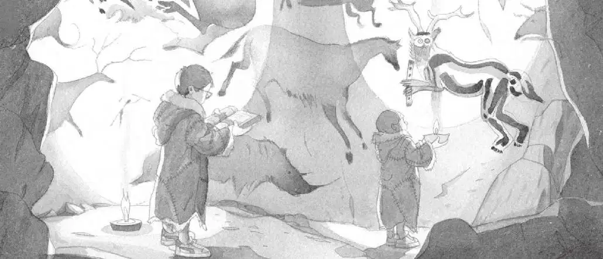

“哇，这是什么地方？”杰克问道。
“也许是画廊。”安妮回答。
“我看不像。”杰克说，“这地方太不方便进来参观了。”

他仔细阅读书上关于洞穴壁画的介绍：
两万五千年前，克鲁马努人把他们捕猎到的动物画在墙壁上。
他们相信壁画能赋予人力量，帮助人控制那些动物。
“哇，你看这个。”安妮突然说。
她看着眼前墙壁上的一幅画。
画上的那个形象，有和人一样的腿和胳膊，但长着驯鹿的犄角和猫头鹰的脸，手里似乎还拿着一支笛子。
杰克又回过头来看书。他找到了一幅关于这个形象的图片。他把图片下方的文字读了出来：
克鲁马努人可能会受到巫师（又称“动物大师”）的指引。
巫师多半戴着驯鹿的犄角，这样就能使自己像驯鹿一样奔跑。
他们也会戴猫头鹰的面具，这样目光就能像猫头鹰一样敏锐。
“这是什么？”安妮问道。
“动物大师，”杰克说，“是一位巫师。”
“哦，天哪，”安妮压低声音说道，“就是他。”
“什么就是他？”
“他就是我们要找的人。”
“为什么？”
“他也许是仙女摩根的朋友。”安妮说。
杰克慢慢地点了点头。“也许吧。”他说。
“我们去找他吧。”安妮提议。
他们从地道返回，走进最初来的那个洞穴。
“我们最好把这些石灯放回去。”杰克说。
他和安妮把石灯吹灭，然后把它们重新放回到火边。
杰克的背包就放在那堆兽皮旁边，他把冰川时代的书塞进背包。
“花生米呢？”安妮问。
杰克往背包里看了看。“它不见了。”杰克说。
“哦，糟糕！”安妮喊了起来，“它肯定是在我们看壁画的时候爬出去了。”
“花生米！”杰克叫了起来。
“花生米！”安妮也跟着呼唤。
安妮在洞穴里走过来，走过去，在角落里仔细寻找。
杰克在火堆周围找，把每一张毛乎乎的兽皮都掀开来看。
“杰克！快过来！”安妮突然喊道。
她站在靠近洞口的地方。
雪已经停了。
雪地上有一些小小的脚印。